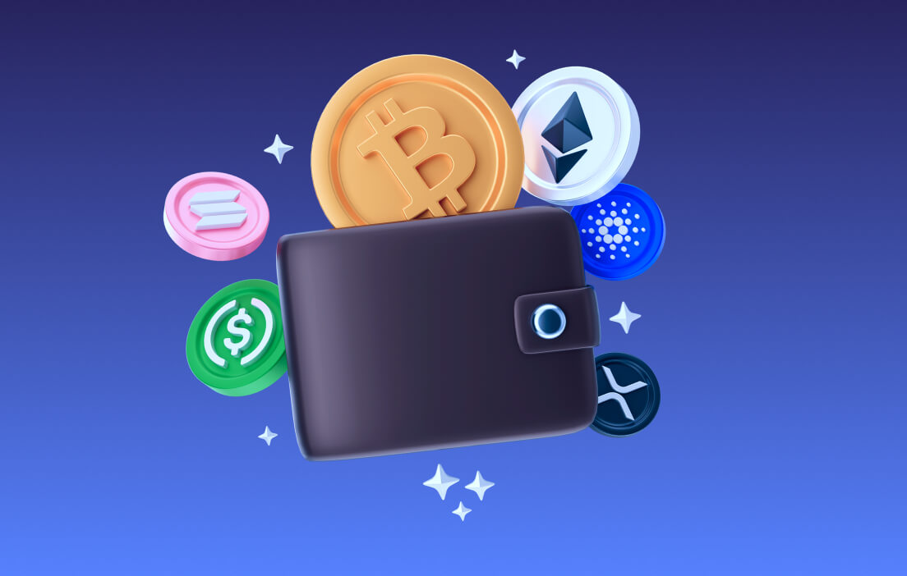

Wallets (billeteras digitales)
Las wallets o billeteras digitasl son aplicaciones que permiten almacenar y gestionar dinero. Por ejemplo: Yape, Plin, Agora, Google Pay, Apple Pay, etc.
Hot wallets vs Cold wallets
La diferencia principal entre una Hot Wallet y una Cold Walletse reduce a una sola
cosa: si están conectadas a internet o no.
Hot Wallet
Es cualquier billetera de criptomonedas que está conectada a internet. Puede ser una
aplicación en tu celular, un programa en tu computadora o una extensión del
navegador.
- La ventaja: Es cómoda y rápida. Te permite comprar, vender o enviar criptomonedas
en segundos desde tu teléfono.
- El riesgo: Al estar en un dispositivo conectado a internet, es vulnerable a virus,
phishing (estafas) o hackeos pero es seguro si sabes configurar bien la wallet.
- Uso ideal: Para guardar pequeñas cantidades de dinero que usas con frecuencia
para comprar cosas o realizar transacciones.
Cold Wallet
Es un dispositivo físico (generalmente parece un pendrive o USB) o incluso un
pedazo de papel donde tus claves privadas se guardan completamente aisladas de
internet. Las marcas populares son Ledger o Trezor.
- La ventaja: Es máxima seguridad. Como nunca toca internet, es inmune a hackeos
remotos o virus en tu computadora. Para autorizar cualquier transacción, tienes que
presionar botones físicamente en el dispositivo.
- El riesgo: Si la pierdes físicamente junto con tu frase de respaldo (seed phrase), o si no sabes usarla bien, podrías perder el acceso a tus fondos.
Tampoco es tan rápida de usar para compras del día a día.
- Uso ideal: Para guardar tus ahorros a largo plazo o montos grandes de dinero.

NOTA: Mencione la frase "seed phrase" pero que es eso?
Una seed phrase (frase de recuperacion) es un respaldo para tus criptomonedas. Consiste en una lista de 12 o 24 palabras aleatorias generadas automáticamente por tu billetera cuando la creas por primera vez (por ejemplo: hotel, agent, plastic, lesson, forward, ...).
Si pierdes tu teléfono, se rompe tu computadora o cambias de billetera, con esas 12 o 24 palabras puedes recuperar todo tu dinero desde cualquier parte del mundo.
Tus criptomonedas no están guardadas dentro de la app de tu teléfono ni en la billetera física (Cold Wallet); están guardadas en la blockchain.
Lo que guarda tu billetera es una clave privada (un código matemático gigante) que demuestra que ese dinero te pertenece.
Ese código matemático gigante es casi imposible de memorizar a diferencia de tu clave de cajero o clave de 6 digitos de tu app bancaria. Debido a esto, se creo un estandar en la industria llamado BIP-39:
- La matemática detrás: La red elige un código aleatorio muy complejo
- El traductor: Ese código se traduce a una lista fija de 2,048 palabras en inglés. - Tu frase (seed phrase) Cada una de tus 12 o 24 palabras representa una porción matemática de tu clave privada.
Si ingresas esas palabras en el orden exacto en cualquier billetera compatible, la app recalcula la clave matemática y vuelve a darte acceso instantáneo a todos tus fondos
Custodial vs Non-custodial
La diferencia entre Custodial (con custodia) y Non-custodial (sin custodia) se
resume en una pregunta fundamental: ¿Quién tiene realmente el control absoluto
de tus llaves privadas (y por lo tanto, de tus criptomonedas)?
1. Custodial
Una empresa o plataforma guarda y administra las claves de tus criptomonedas por ti.
Tú creas un usuario y contraseña. Si olvidas tu clave, haces clic en "Olvidé mi
contraseña" y la empresa te ayuda a recuperarla.
- Ventajas: Fácil y cómodo de usar (para principiantes). Si pierdes tu contraseña,
no pierdes tu dinero automáticamente ya que recibes ayuda.
- Desventajas: No posees realmente tus criptomonedas ya que la empresa las tiene a su nombre
y te da un saldo digital en pantalla. Si la empresa quiebra, es hackeada o congela tu cuenta,
puedes perder el acceso a tu dinero.
2. Non-Custodial
Tú y solo tú tienes el control absoluto de tus llaves privadas (las 12 o 24 palabras de recuperación).
Ninguna empresa ni intermediario tiene acceso a ellas. Ejemplos: Las cold wallets y algunas
aplicaciones como Metamask que veremos más adelante.
- Ventajas: Eres 100% el propietario, nadies puede congelar tu cuenta o bloquearla
- Desventajas: Eres 100% responsable de lo que pase. Si pierdes tu frase de recuperación
o caes en una estafa, nadie podrá ayudarte a recuperar tu dinero. No existe un botón de
"Olvidé mi contraseña".
Nota importante:
No cabe duda que las cold wallets son Non-Custodial ya que la llave (seed phrase) las
tienes tú mismo pero porque algunas aplicaciones como Metamask o Trust Wallet también son consideradas
Non-Custodial?
Aunque puedas pensar que, al ser aplicaciones móviles, son intermediarios. En realidad,
son Non-Custodial ya que las llaves/claves se guardan en la memoria de tu celular o
computadora. Esas aplicaciones no tienen bases de datos (almacenamientos) donde guardan
tus llaves, simplemente funcionan como una forma más fácil de que tu interactues con tus
criptomonedas.
Recuerda:
- ¿Quién tiene la llave? -> Custodial vs. Non-custodial
- ¿Está conectada a internet? -> Hot Wallet vs. Cold Wallet
Regla de oro:
Quien tenga tu seed phrase tiene tu dinero. Nunca las publiques, nunca
les tomes una foto y guardalas siempre en papel o en algun lugar fuera de internet.
En el mundo cripto existe un dicho muy popular que resume esto: "Not your keys,
not your coins" (Si no son tus llaves, no son tus monedas).